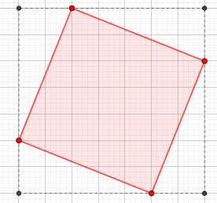
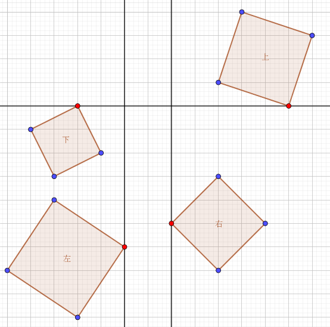
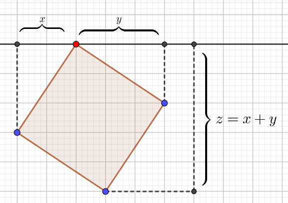
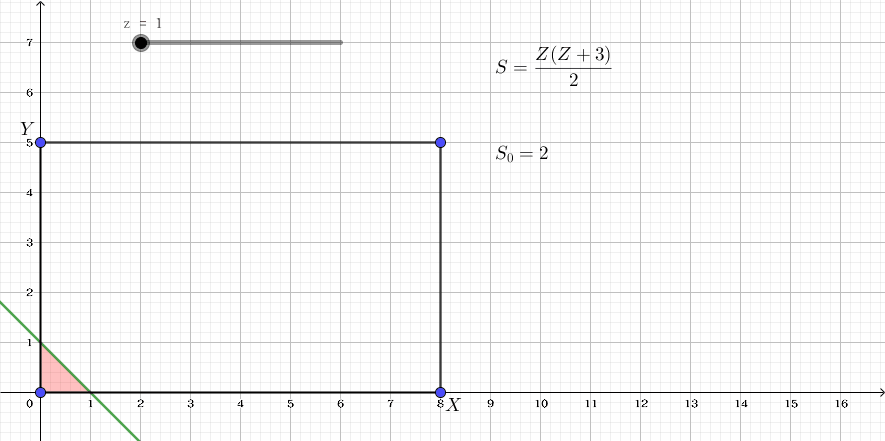

上帝说，不要圆，要方，于是便有了这道题。
由于我们应该方，而且最好能够尽量方，所以上帝派我们来找正方形上帝把我们派到了一个有 $n$ 行 $m$ 列的方格图上，图上一共有 $(n+1) \cdot (m+1)$ 个格点，我们需要做的就是找出这些格点形成了多少个正方形 (换句话说，正方形的四个顶点都是格点)。
但是这个问题对于我们来说太难了，因为点数太多了，所以上帝删掉了这 $(n+1) \cdot (m+1)$ 中的 $k$ 个点。既然点变少了，问题也就变简单了，那么这个时候这些格点组成了多少个正方形呢？
第一行包含三个整数 $n, m, k$ ($1 \leq n, m \leq 10^6, 0 \leq k \leq \min \{(n+1) \cdot (m+1), 2000\}$)，代表棋盘的行数、列数和不能选取的顶点个数。
约定每行的格点从上到下依次用整数 $0$ 到 $n$ 编号，每列的格点依次用 $0$ 到 $m$ 编号。
接下来 $k$ 行，每行两个整数 $x, y$ ($0 \leq x \leq n, 0 \leq y \leq m$)，代表第 $x$ 行第 $y$ 列的格点被删掉了。保证不会出现重复的格点。
仅一行一个正整数，代表正方形个数对 $10^8 + 7$ 取模之后的值。
由于删除的格点不是很多，因此可以考虑使用 "减法原理"，即用所有的正方形总数减去至少包含 $k$ 个点中的一个点的正方形的总数。
首先是所有的正方形总数，由于是一个规则的方格图，那么看起来式子应该不会很难看，以下假设 $n \leq m$。
注意到这里的正方形的边不一定要平行于坐标轴，因此可能存在像下图一样的正方形 (红色)：
不过我们可以发现，这种正方形一定会存在一个唯一的 "正方形框架" (如上图中的虚线正方形)，且它的边平行于坐标轴。
因此我们可以枚举正方形的框架的边长 $a$ ($0 \leq a \leq n$)，那么方格图中边长为 $a$ 且边平行于坐标轴的正方形应该有 $(n-a+1) \cdot (m-a+1)$ 个，对于每一个确定的 (边长为 $a$ 的) 正方形，一共有 $a$ 个正方形 (包括它本身) 以它为框架，因此这样的正方形的总数应该为 $\sum\limits_{a=0}^n (n-a+1) \cdot (m-a+1) \cdot a$ 个，做一发和式变换，有
\begin{align*} & \sum_{i=0}^n (n-i+1) \cdot (m-i+1) \cdot i \\ =& \sum_{i=0}^n \left( i^3 - (n+m+2) i^2 + (n+1) (m+1) i \right) \\ =& \sum_{i=0}^n i^3 - (n+m+2) \sum_{i=0}^n i^2 + (n+1)(m+1) \sum_{i=0}^n i \\ =& \frac {n^2 (n+1)^2} 4 - \frac {n (n+1) (2n+1) (n+m+2)} 6 + \frac {n (n+1)^2 (m+1)} 2 \\ =& \frac {n (n+1) (n+2) (2m-n+1)} {12} \end{align*}
可以在 $O(1)$ 时间内求得 (好像 $O(n)$ 也可以)。
接下来考虑至少包含一个顶点的正方形总数。
由于 $k$ 比较小，因此考虑枚举包含的顶点。但是这有一个问题，可能存在一些正方形它包含多于一个顶点，这怎么办呢？
根据组合计数的套路，可以使用容斥原理。即我们再算出包含两个、三个以及四个顶点的正方形的总数，然后交错相减就可以了。
由于已知 $2$ 个点的正方形的个数是 $O(1)$ 的 (不超过 $3$ 个)，因此可以 $O(k^2)$ 枚举两个点，把包含两个、三个以及四个顶点的正方形数量统计出来 (注意去重)。
接下来就是包含一个顶点的正方形总数。
显然不能 $O(nmk)$ 枚举。不过我们可以发现，包含一个顶点的正方形 (对该顶点来说) 可分为四类：
即，正方形在该点的下方、上方、左方和右方。即过该点作一条与坐标轴平行的线，看正方形落在该直线的哪一侧。
当然，边平行于坐标轴的正方形可以属于两类，不过其它正方形至多属于四类中的一类。
因此，我们对四类正方形的数量分别计数，最后减去重复的 (边平行于坐标轴的) 即可。
由对称性，我们只考虑 "下" 这一类的数量：
如上图规定 $x, y, z$，其中 $x, y$ 为该点到最左、右顶点的 (水平) 距离，$z$ 为该点到最下顶点的 (垂直) 距离，显然有 $z = x + y$。当然，还有边框的限制：记红点到左边框、右边框、下边框的距离分别为 $X, Y, Z$，那么必须满足 $$ \left\{ \begin{align*} 0 \leq x \leq X \\ 0 \leq y \leq Y \\ 0 < z \leq Z \\ \end{align*} \right. $$
并且，每一组满足上述不等式组的解均唯一的对应这样一个正方形，也就是说，"下" 这一类的正方形与上述不等式组的 (整数) 解形成了一一对应。
因此我们只需求这个不等式组的解数即可。因为 $z = x + y$，因此实际上这个不等式组是二元的。由对称性，不妨设 $x \geq y$。我们考虑它的几何意义：
可以发现，就是一个矩形被一条斜率为 $-1$ 的直线截去后剩余图形内部的格点数目，稍微推一下公式可得：
最后别忘记减去边平行于坐标轴的，这个就是四边取 $\min$ 再相加即可。最后再使用一遍容斥，时间复杂度 $O(k^2)$。
#include <bits/stdc++.h>
#define N 4268
#define y1 scx1
using namespace std;
typedef pair <int, int> pr;
typedef set <pr> Set;
typedef long long ll;
const ll mod = 100000007, inv12 = 8333334;
const ll inv2 = 50000004, inv3 = 33333336, inv6 = 16666668, i23 = 66666672;
bool swapped;
int r, c, n;
int fx[N], fy[N];
int x1, x2, x3, x4, y1, y2, y3, y4;
Set s;
ll ans[5], final;
inline bool exist(int x, int y) {return s.find(pr(x, y)) != s.end();}
inline void inc(ll &x, const ll y = 1) {(x += y) >= mod ? x -= mod : 0;}
void Adjacent(){
int i, j; bool e3, e4;
// anti-clockwise (x1, y1) (x2, y2) (x3, y3) (x4, y4)
for(i = 1; i <= n; ++i){
x1 = fx[i]; y1 = fy[i];
for(j = 1; j <= n; ++j){
if(i == j) continue;
x2 = fx[j]; y2 = fy[j];
x3 = y1 + x2 - y2; y3 = x2 + y2 - x1;
if(x3 < 0 || x3 > r || y3 < 0 || y3 > c) continue;
x4 = x1 + y1 - y2; y4 = y1 + x2 - x1;
if(x4 < 0 || x4 > r || y4 < 0 || y4 > c) continue;
if((e3 = exist(x3, y3)) & (e4 = exist(x4, y4))){
inc(ans[4], inv6); inc(ans[3], i23); // contribute 1/6 & 2/3
}else if(e3 || e4) inc(ans[3], inv3); // contribute 1/3
inc(ans[2]); // contribute whole
}
}
}
void Diagonal(){
int i, j; bool e3, e4;
for(i = 1; i < n; ++i){
x1 = fx[i]; y1 = fy[i];
for(j = i + 1; j <= n; ++j){
x2 = fx[j]; y2 = fy[j];
if((x1 ^ x2 ^ y1 ^ y2) & 1) continue;
x3 = x1 + y1 + x2 - y2 >> 1; y3 = -x1 + x2 + y1 + y2 >> 1;
if(x3 < 0 || x3 > r || y3 < 0 || y3 > c) continue;
x4 = x1 - y1 + x2 + y2 >> 1; y4 = x1 + y1 - x2 + y2 >> 1;
if(x4 < 0 || x4 > r || y4 < 0 || y4 > c) continue;
if((e3 = exist(x3, y3)) & (e4 = exist(x4, y4))){
inc(ans[4], inv6); inc(ans[3], i23); // contribute 1/6 & 2/3
}else if(e3 || e4) inc(ans[3], inv3); // contribute 1/3
inc(ans[2]); // contribute whole
}
}
}
/* get the number of (integer) solution of the following equations:
0 <= x <= a
0 <= y <= b
0 <= x+y <= c
0 < xy
*/
ll solve(int a, int b, int c){
if(a < b) swap(a, b); // a >= b
if(c >= a + b) return ((ll)a * b + a + b) % mod;
if(c >= a){
ll p = ((ll)a * a + (ll)b * b + (ll)c * c - a - b - c) >> 1;
p = ((ll)(a + b) * c - p) % mod;
return p < 0 ? p + mod : p;
}
if(c >= b){
ll p = (ll)c * (b + 1) + ((ll)b * (1 - b) >> 1);
return (p %= mod) < 0 ? p + mod : p;
}
return ((ll)c * (c + 3) >> 1) % mod;
}
int main(){
int i, x, y, d;
scanf("%d%d%d", &r, &c, &n);
if(r > c) {swap(r, c); swapped = true;} // ensure r <= c
*ans = (ll)r * (r + 1) * (r + 2) % mod * ((c << 1) - r + 1) % mod * inv12 % mod;
for(i = 1; i <= n; ++i){
scanf("%d%d", fx + i, fy + i);
if(swapped) swap(fx[i], fy[i]);
s.insert(pr(fx[i], fy[i]));
}
Adjacent();
Diagonal();
for(i = 1; i <= n; ++i){
x = fx[i]; y = fy[i];
inc(ans[1], solve(y, c - y, x)); // U
inc(ans[1], solve(y, c - y, r - x)); // D
inc(ans[1], solve(x, r - x, y)); // L
inc(ans[1], solve(x, r - x, c - y)); // R
d = min(x, y) + min(x, c - y) + min(r - x, y) + min(r - x, c - y);
inc(ans[1], mod - d);
}
final = ans[0] - ans[1] + ans[2] - ans[3] + ans[4];
(final %= mod) < 0 ? final += mod : 0;
printf("%lld\n", final);
}
坑1：由于 $n, m$ 比较大，因此在计算包含两个及以上的顶点的正方形总数时，里面的判断点是否被删掉可以使用 set <int> 或 hash_set。